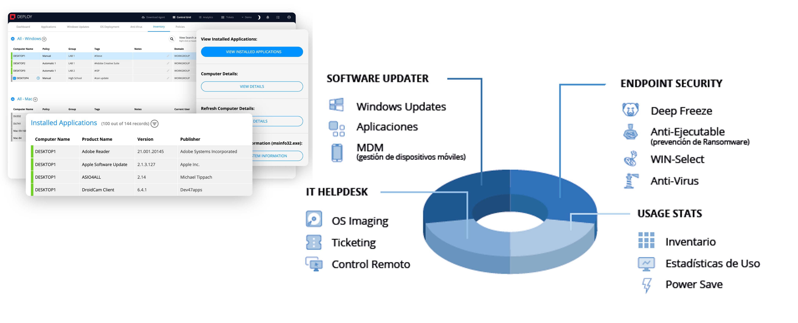

Faronics Cloud: De los creadores de Deep Freeze: Soluciones simples para la seguridad de endpoints y la gestión de dispositivos.

Faronics ofrece soluciones de ciberseguridad y gestión de sistemas diseñadas para proteger y administrar entornos informáticos de múltiples usuarios. Algunos de los softwares más conocidos son: Deep Freeze, Deploy, MDM, Power Save, Win Select y el Anti Virus
Los productos de Faronics nos ayudan a prevenir, detectar y recuperar, los tres objetivos de ciberseguridad.
Descargar más información
Accede a documentación detallada sobre Outkept y sus beneficios en ciberseguridad.